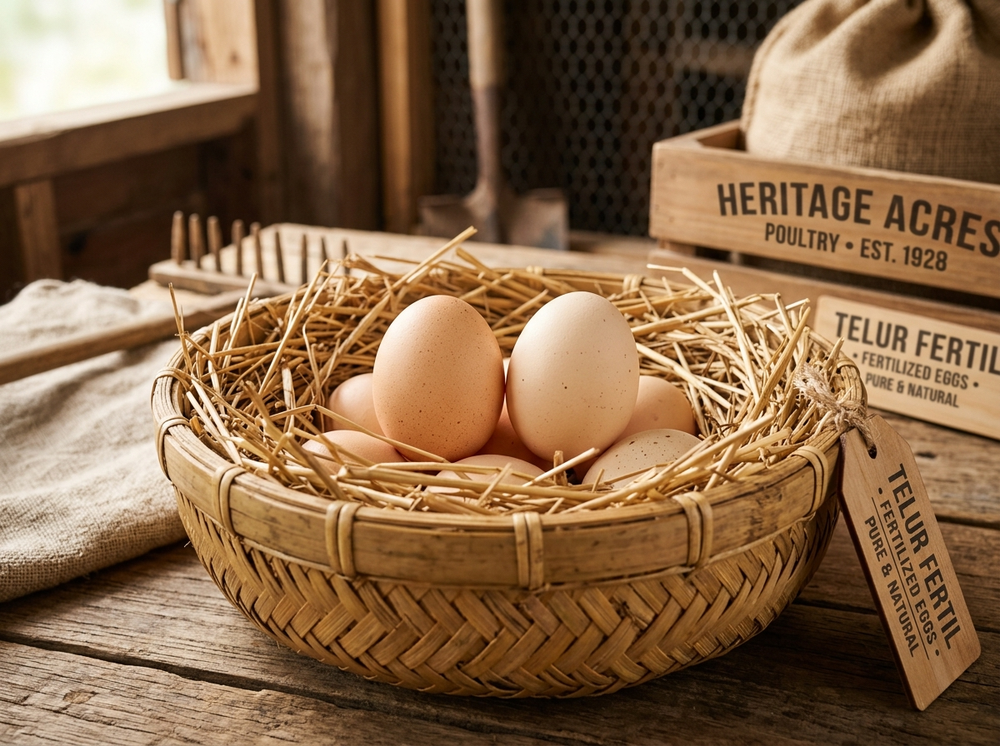
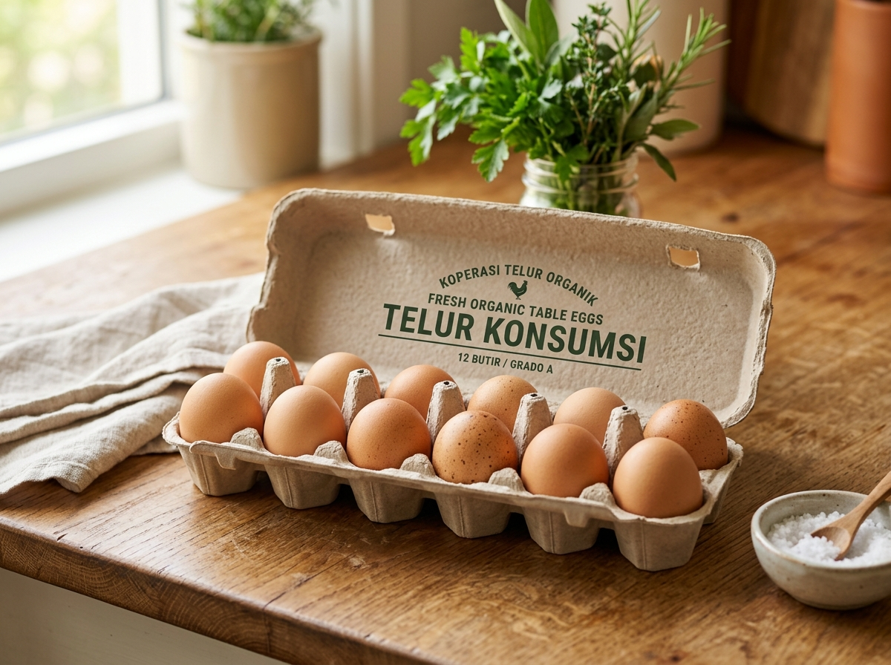
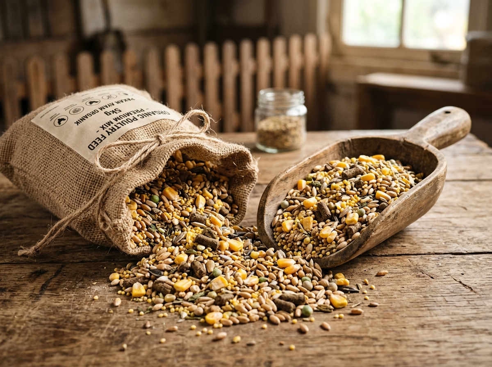

Kami menghadirkan ayam Kampung strain unggulan Kuntara4 dengan genetik terbaik, telur fertil berdaya tetas tinggi, telur konsumsi segar harian, serta pakan pilihan untuk mengoptimalkan tumbuh kembang ternak Anda.

Ayam Kampung Kuntara4 memiliki daya tahan tubuh tinggi dan pertumbuhan optimal.
Telur konsumsi diambil langsung setiap pagi untuk menjaga kesegaran maksimal.
Telur fertil dikemas dengan bubble wrap tebal dan pengaman guncangan.
Silakan filter kategori produk di bawah ini untuk melihat detail produk unggulan peternakan kami.

Strain ayam kampung unggul dengan pertumbuhan lebih cepat, daya tahan penyakit kuat, serta efisiensi pakan yang sangat baik.
Pesan via WhatsApp
Telur fertil segar dari indukan pilihan dengan rasio pejantan optimal. Siap untuk dimasukkan ke mesin penetas Anda. Garansi fertilitas.
Pesan via WhatsApp
Telur ayam kampung murni bernutrisi tinggi, bebas dari bahan pengawet kimiawi, tebal cangkangnya, dan sangat segar untuk konsumsi harian keluarga.
Pesan via WhatsApp
Campuran pakan bertekstur halus tinggi protein, mineral, dan kalsium yang dirancang untuk mendukung perkembangan tulang dan imun anak ayam.
Pesan via WhatsAppPakan butiran berkualitas dengan campuran bekatul fermentasi dan vitamin alami untuk mempercepat laju pertumbuhan berat badan ayam remaja.
Pesan via WhatsAppKami bukan sekadar peternakan biasa. Kami menerapkan standar manajemen kebersihan kandang, biosekuriti yang ketat, dan pemberian asupan bernutrisi seimbang untuk menghasilkan kualitas ternak terbaik.
Indukan kami dipelihara secara terpisah dengan pengawasan seleksi genetik berstandar tinggi.
Seluruh ayam mengonsumsi pakan racikan alami tinggi serat dan mineral tanpa antibiotik sintetis berlebih.
Kami bersedia memberikan panduan cara penetasan dan manajemen kandang bagi pelanggan pemula.
Ikuti 3 tahapan mudah berikut untuk memesan kebutuhan peternakan Anda di Ndalem Pitik.
Tentukan jenis ayam, telur fertil, atau pakan yang ingin Anda beli pada katalog kami.
Klik tombol pesan di kartu produk untuk mengirim pre-filled template chat otomatis ke admin kami.
Lakukan pembayaran, lalu pesanan akan langsung dikirim atau Anda ambil di lokasi peternakan.
Berikut ulasan jujur dari beberapa mitra peternak dan pelanggan setia Ndalem Pitik.
"Daya tetas telur fertil Kuntara4 dari Ndalem Pitik luar biasa tinggi! Dari 50 butir, 45 butir berhasil menetas sehat di inkubator saya. Sangat direkomendasikan!"
"Telur konsumsinya sangat segar dan rasanya gurih sekali. Cangkangnya tebal menandakan asupan kalsium ayamnya sangat baik. Langganan buat keluarga."
"Pakan starternya sangat wangi dan disukai anak ayam. Pertumbuhan DOC Kuntara saya jadi lebih seragam dan tidak gampang stres. Terima kasih Ndalem Pitik."